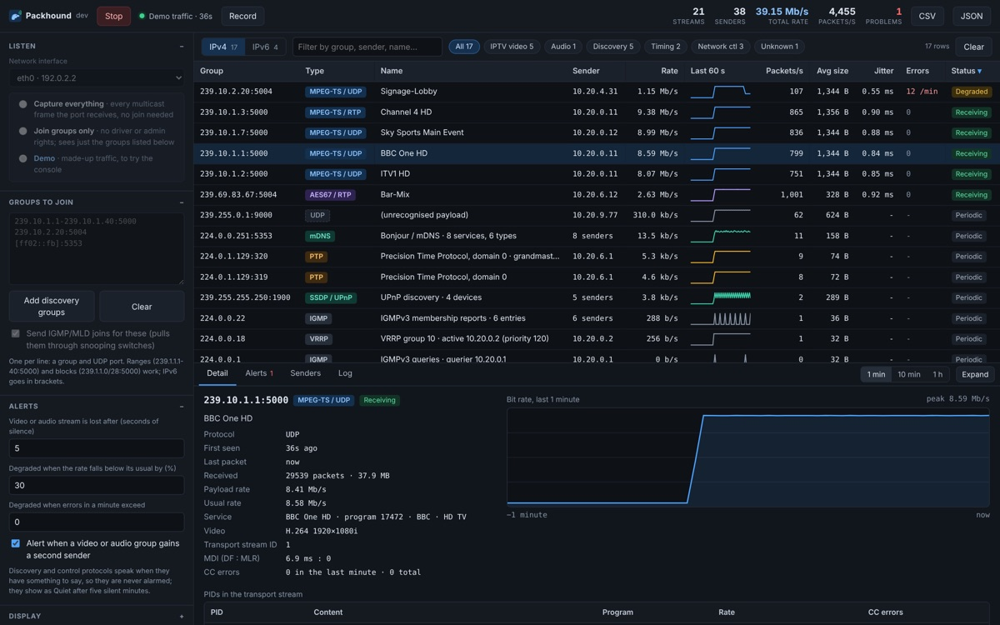

Packhound
By Andrea Coppini
Sniffs out every multicast stream arriving at a network port and tells you what it is, how fast it runs, who is sending it and whether it is healthy: IPTV channels, AES67 audio, mDNS, SSDP, PTP, IGMP and the rest of a network's chatter. A mosaic shows a live still of every TV channel, with its state and whether its audio is arriving.
Key features
- IPTV: each programme's name, provider and type; the PIDs with their content, language and rate; the picture size read from the H.264 stream; continuity errors per PID; the Media Delivery Index (delay factor and loss rate, RFC 4445); RTP losses and reordering.
- Telling real errors from false alarms: a continuity error is only counted as one when packets are actually missing. Many encoders advance the counter on packets that carry only a PCR, which the standard forbids but every decoder ignores; those are shown separately as CC quirks (no loss). A datagram that arrives twice (a loop, or two paths) is counted as duplicated rather than as a run of CC errors. If the capturing machine itself drops packets because its buffer overflowed, the header says so, since the errors it causes are not on the network.
- Dante: multicast flows (239.255.x.x, port 4321) named after the device that sends them; the PTPv1 clock leader, with its address, device name, stratum and sync interval; and the devices and their channels from their mDNS announcements. Dante's audio format is its own, so a native flow shows rate, packets, jitter and whether it stops, but not channel content; a device in AES67 mode shows as AES67, with packet loss. Dante sends audio unicast unless a flow is set to multicast, and unicast flows are not visible to a multicast monitor.
- AES67 and RTP audio: format, packet time and sender, named from SAP.
- mDNS: every service announced (AirPlay, Chromecast, printers, Sonos, HomeKit and so on) with its host, address and port, and what is being asked for.
- SSDP and WS-Discovery: devices, their server strings and description URLs.
- PTP: the grandmaster, its clock class, accuracy and priority, and the message rates.
- IGMP and MLD: the elected querier and its interval, and who has joined what.
- VRRP and HSRP: the active router, its priority and the virtual addresses; two VRRP routers advertising the same group is flagged as a split brain.
- IPv6 neighbour discovery: routers advertising, their prefixes and DNS, and the addresses being resolved.
- Anything unrecognised: the first bytes of the payload.
Featured in The RUCKUS Vibe, November 2026.